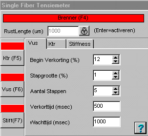
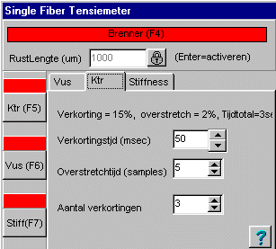
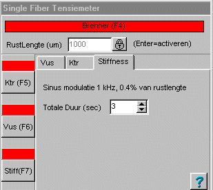
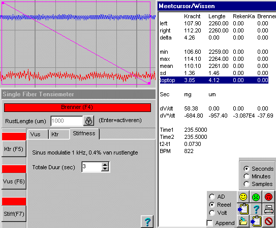

Single Fiber Tensiemeter (f65)
13295, 19412, 13552
Uitbreiding met REK (juli 2004)
Let erop dat nu ook Marker F3 wordt ingeschakeld, deze wordt gebruikt voor de REK ! Probeer de unctie eerst met Brenner-cyclus uitgeschakeld.
Bij deze meting wordt de spier een aantal malen achtereen steeds verder verlengd. (grootte orde: stapgrootte 10%, 5 stappen van ieder 20 seconden)
Deze functie blablabla....
FUNCTIE 65: Single Fiber Tensiemeter
-- Sinusgenerator (ingebouwd in Fysioflex-systeem)
in/uitschakelen via Digitale output OP0 op DAS1602.
-- Lengte instellen via analoge spanning van DAC0 op
DAS1602. Spanningsrange van -5V..+5V komt overeen met
lengte 0..4000 micrometer.
Op de popup kan de lengte worden ingesteld met een schuifbalk
en met knoppen. Hier kan eveneens de sinusgenerator worden
in- en uitgeschakeld.
Er zijn geen instelbare parameters.
Functie-outputs:
1: de ingestelde lengte (0..4000 micrometer)
2: status van de Sinusgenerator. 1=aan, 0=uit.
|
|
 |
|
|
 |
|
|
 |
|
Door op het label "Brenner" te klikken kan de Brenner-cyclus worden aan- of uitgeschakeld. Rood = uit , Groen = aan (niet actief) , Geel = aan (aktief) Middels de knop (en ook het gekleurde panel) daaronder, kan de gekozen functie worden gestart. Zoals aangegeven (in de tekst van de knop), kan de functie ook met een functie-toets worden gestart. De meetwaarden worden 2 maal per seconden ververst (er wordt momenteel gesampeld en niet gemiddeld). De blauwe balken onderaan geven de waarden van de beide DAC-kanalen weer (DAC0 boven en DAC1 onder). Hiermee kan gecontroleerd worden of de DAC's nog in hun werkbare gebied zitten. Met de helpknop kan dit document worden opgeroepen. |
|
|
De rustlengte is de lengte van de vezel bij de rustwaarde van de DAC0. Dit betekent dat na het invoeren van de rustlengte, ook de DAC opnieuw genuld moet worden. Protocol in praktijk uittesten. Met de selectiebox "Actie" kan de actie worden geselecteerd dir op het display paneel is te starten. Bij Vus kan bovenedien de percentuele verkorting worden ingesteld. Door op de labels font te drukken, kunnen de fonts en bijbehorende kleuren worden ingesteld. |
|
Middels de Brenner cyclus wordt de spier periodiek verkort, waardoor de levensduur wordt verlengd.
De Brenner cyclus kan worden gestart en gestopt door op het betreffende label te klikken.
Als de Brenner cyclus niet is ingeschakeld, is het label rood gekleurd. Als de Brenner cyclus wel is ingeschakeld in het label helder groen gekleurd. Het groene veld loopt leeg als een zandloper en op het einde van de cyclus wordt even de spier met een vaste fractie verkort, het label kleurt dan ook even geel.
Bij de start van de actieve (=verkortings) periode in de Brenner cyclus wordt marker F4 uitgegeven.
De parameters van de Brenner cyclus zijn vast ingesteld op:
totale periode = 5 sec
actieve periode = 200 msec
verkorting = 10%
Met behulp van de meetcursor, kan de top-top waarde van de sinus stimulatie van zowel de lengte als de kracht worden gemeten.
De ingesteld lengte modulatie bedraagt in dit gevat (opname 20) 0.4% bij de opgegeven spierlengte van 1000 um overeen komt met 4 um.
De gemeten waarde van 4.12 um komt hiermee goed overeen.
